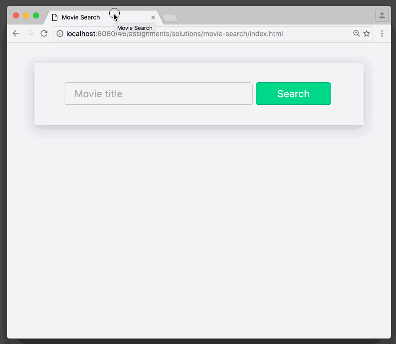

🎥 Movie Search
Congrats! You made it to Movie Search, the assignment that brings it all together: HTML, CSS, event handlers, AJAX, DOM manipulation, and arrays.
For this assignment, you'll have no starting point. So you'll have to structure the page and get the styles working first before you can get to the JS. Don't fret, in the solution the HTML takes up about 25 lines of code the CSS about 60.
Where do I get the movie search results from?
OMDB API, a free service that serves up movie-related JSON content.
You make search calls by simply going to: http://omdbapi.com/?s={query}. So, for example, if you want to search for "matrix" you'd visit http://omdbapi.com/?s=matrix.
The response comes back as a JSON string, which you may have to parse with JSON.parse() depending on how you decide to perform the HTTP request (jQuery will likely do it for you automatically). The array of movie search results live inside the Search property of the resulting object. So, for example, to get the name of the 2nd movie in the list, we'd write results.Search[1].Title. If the casing bothers you, this also works results["Search"][1]["Title"]. To loop through the results we'd write results.Search.forEach(doSomething), where doSomething is a function we define.
How do I perform the HTTP GET request?
You can either copy/paste the get() function that we already discussed. Or, you can include jQuery and use the $.get() function, like a boss. Both functions are called in exactly the same way.
When I do a 2nd search, the results are added to the bottom. How do I clear the movies that are there first?
There's a method called removeChild() on all elements but it's a little clunky to use, so it's common practice to just set the textContent to an empty string (e.g., el.textContent = "").
This feels daunting, where do I even start?
Always start with the HTML. Get a form on the page with the requisite inputs. Then add the HTML to list a couple movies just as an example of what you'll see when you do a real search. Doing this will make you familiar with the content you need to create with JS. Add a little CSS, just to get the basic structure down but don't do any polish until after the JS is working.
When it comes to JS, start with some pseudo-code. Go back and look at how we did the GitHub User Lookup. Use the word "when" to help dictate what functions you'll need to write. Give yourself small goals like simply writing what's inputted to the console with console.log() (remember you can call that function anywhere in your code and pass it pretty much anything to see what's happening). You can also work backwards, writing the "display a movie" function first! Then open your console, call your function, pass it the right parameters, and see it appear on the screen. When the results come back from the server and it's time to put the movies on screen you'll already have that part done.